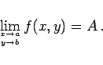

Inhalt Index DeskTop Bronstein

 Funktionen und ihre Darstellung Funktionen von mehreren Veränderlichen
Funktionen und ihre Darstellung Funktionen von mehreren Veränderlichen


Eine Funktion von zwei Veränderlichen u=f(x,y) besitzt einen Grenzwert A für das Wertesystem x = a, y = b, wenn sich die Funktion f(x,y) bei beliebiger Annäherung von x gegen a und von y gegen b dem Wert A beliebig nähert. Man schreibt dann
|  | (2.276) |
Dabei braucht die Funktion für das Wertesystem x=a,y=b, d.h. im Punkt (a,b) selbst, den Wert A weder anzunehmen noch definiert zu sein.